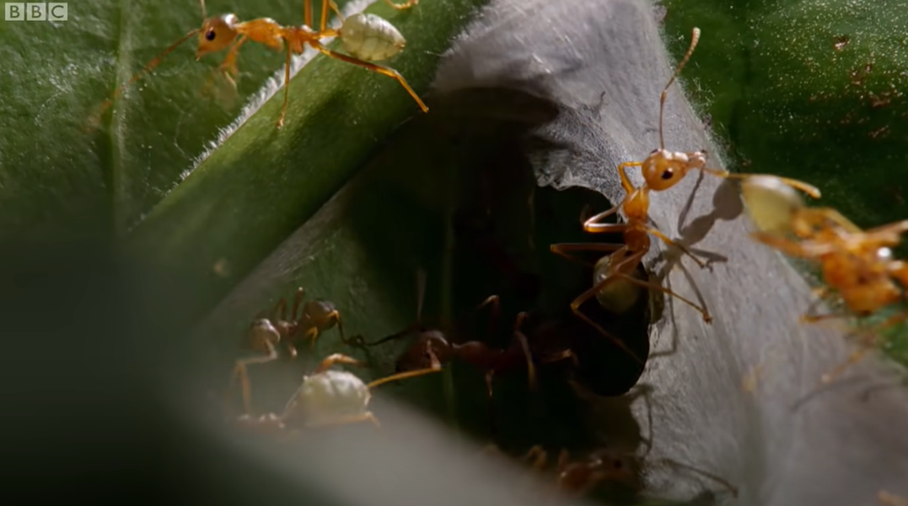
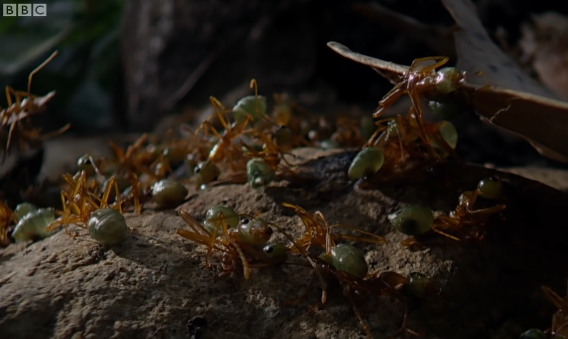

References and sources for this essay can be found in the much longer companion piece, War as a system in nature (SSRN, personal site).
A PDF version of this essay can be found here
1 Ants fight wars
Ants seem to be simple creatures, far removed from us sophisticated humans, yet somehow they work together to grow crops, to farm herds of animals, and to live in cities with populations in the millions, complete with road networks, waste management systems, temperature control, and public health systems.
And, like us, ants fight wars.
1.1 Weaver ant wars
Here’s an example: a two-minute video in which David Attenborough describes a colony of weaver ants in the Australian tropics battling to “protect its fortress” from another colony.
This conflict not only looks like a war, it also fits the definitions of war commonly used by social scientists when they talk of human wars. The key elements of most definitions are scale, lethality (through the use of weapons), organization, and the fact that the conflict takes place between “political units”: the violence is mutual and it serves a purpose for each of the communities involved.
Let’s walk through the weaver ant video again, and see how each of these qualities is satisfied. Attenborough’s narration is in the captions, and our commentary follows each scene.
To set the scene: weaver ants live in colonies with populations that may reach half a million. The colonies are in the tree canopies of tropical jungles, and are dense enough that their well-marked and patrolled borders butt up against each other, filling the available space just as nation state territories fill out the continents of the world. This territorialilty is one aspect of being a political unit.
Figure 1 shows ants from one colony intentionally crossing the border into the territory of another in a coordinated fashion. (We will come back to that word “intention”.) Here is the first indication of organized violence.
Figure 2 shows how the weaver ants of the home colony are organized to play specialized roles. Specialization is even built into their bodies. The queen has a special role as the layer of eggs, but even though they are all half-sisters there are two distinct sizes of worker ant. The “minors” mainly look after the brood, while the “majors”, which are twice as big and sometimes called “soldiers”, carry out other tasks. Older major ants act as border guards. Again, these are all aspects of organization, one of the characteristics of war.

Figure 3 shows communication at work, another aspect of organization. The guard’s pheromone signal alerts other ants, “recruiting” them to defend the colony in a form of efficient and effective purposeful communication between different groups of ants within the colony.
In her 2021 book War: How Conflict Shaped Us, historian Margaret MacMillan says that wars are distinguished from bar fights by their scale. In narrating Figure 4, Attenborough tells us that the colony might be wiped out. That’s the potential for, and sometimes the reality of, hundreds of thousands of deaths – surely enough to qualify as “mass” violence.
Figure 5 brings us to weapons. Ant weapons differ from human weapons in that they are part of the body rather than being a prosthetic device. Still, this targeted adaptation equips the ant with the ability to inflict damage on multiple enemies, at a distance. The level of lethality at work is enough that we would agree with Attenborough when he calls these adaptations “weapons”.
One not-so-obvious component of definitions of war is that the violence (or at least the potential for it) is mutual. One-sided violence in the ant world is usually called predation: war takes between political units. In Figure 6, the home guard goes on the offensive. The organized violence in this conflict is indeed mutual.

For decades, the late E. O. Wilson and Bert Holldobler were the foremost authorities in the study of ants. They wrote that “The colony is the unit of meaning in the lives of ants. The workers’ loyalty to it is nearly total”, and in Figure 7 we see worker ants that have died for the greater good and for the future of the colony. Surely these colonies count as political units.
In short, this weaver ant conflict has all the makings of what we would call a war.
1.2 Other ant wars
There are about 20,000 species of ants in the world, so there’s no one form of ant war. But weaver ants are not the only ones to engage in conflicts that fit this definition of a war. Here are some other ant wars
In the temperate climes of Europe, wood ants form colonies which, like weaver ants in the tropics, expand until they border on each other. During winter the wood ants hibernate and boundaries between the colonies become blurred. In the spring they fight until boundaries are re-established, after which they commonly live side by side for the rest of the summer. The spring battles may be mere skirmishes, but in some cases they lead to the destruction of one colony, with the victorious colony using the bodies of vanquished ants as food to build up their nutritional stores after the winter.
In the 19th century, Argentine ants were accidentally exported around the world on ships, and they have settled in so well in their new homes that they have established what are called “supercolonies”, with thousands of nests, thousands of queens, and up to a trillion workers. There is a massive supercolony in California, which stretches from the Bay Area down to San Diego. But near San Diego it borders another colony where a war between the two is in progress, which has killed millions of ants each month for the last hundred years. By number of casualties, it is more deadly than any other known war.
In the tropics of the Americas, Leafcutter ants construct the most sophisticated of all ant societies. Their colonies have a single queen and are maintained by several different castes of worker ant of massively different sizes, which practise an elaborate form of fungus farming (see Figure 8). They fight nearby colonies, but they also have to fight off invading colonies of army ants, which don’t maintain a static nest but maraud through the jungle as a column of hundreds of thousands of ants on the move. Leafcutters adopt different tactics depending on the enemy: when fighting other leafcutter ant colonies, minor workers do most of the fighting, but when army ants invade it is the majors who play the most important roles.
One difference between ant wars and human wars is that all human wars are between members of the same species, but some ant wars, like those between the leafcutters and army ants, are between different species. Is this still a war? If you watched the Lord of the Rings and didn’t complain about the phrase “the War of the Ring”, you’ve already accepted the principle. Perhaps it makes sense to think of inter-species ant wars as “asymmetric warfare” between armies using different technologies and resource bases, like that carried out in Afghanistan over the last 20 years.
2 Asking questions about wars
As epigraph to Chapter 1 of her book “War”, Margaret MacMillan chose a quotation from Frederic Manning: “War is waged by men; not by beasts, or by gods. It is a peculiarly human activity.” She goes on to say that (p xi): “War raises fundamental questions about what it is to be human and about the essence of human society”. The idea that war is uniquely human, and tied to our humanity, is widespread, but ants show that war is not a “peculiarly human activity”.
Still, it is fair to ask “so what?” Isn’t ant war just a curiosity? A surface similarity? After all, when we think about human wars, we do not seek simply to classify events as “war” or “not-war”. We want to answer urgent questions, like: how do wars come about? what effects do wars have? how can wars be avoided or limited? how are wars won and lost? Addressing these questions leads us inevitably to the worlds of international relations, social institutions, human history, ethics, human nature, the nation state, technological innovation, law, diplomacy, and more. Aren’t these, as MacMillan suggests, uniquely human topics?
So here is the next point we wish to make: all those questions we ask about human wars can be asked of ant wars too, and the answers are not so different. We will go through a list of topics, but as preface we’d like to highlight two themes that run through all of them.
The first is that any study of ants encourages a “system viewpoint” of war. The causes and effects of particular wars are not of as much interest when we look at ants. In ants, there is an ecosystem and there are inhabitants, and these generate particular forms of ant society, and in some ant species these societies periodically engage in and are shaped by wars. Instead of thinking about causes and effects, the focus is on the co-evolution of war and other aspects of ant societies: wars are just one aspect of a bigger system. This approach is not unheard of among those who study human war of course: think of historian and sociologist Charles Tilly’s aphorism “War made the state and the state made war”, but the perspective of war as a system is more obvious in the world of insects.
The second theme is a perspective of “convergent evolution” between ant and human societies. Here we don’t mean a biological determinism, but evolution in a broader sense. Here is a beautiful paragraph by Canadian author Ronald Wright, invoked by John Gowdy and Lisi Krall writing about the origins of ants’ ultrasocial behaviour:
What took place in the early 1500s was truly exceptional, something that had never happened before and never will again. Two cultural experiments, running in isolation for 15,000 years or more, at last came face to face. Amazingly, after all that time, each could recognize the other’s institutions. When Cortés landed in Mexico he found roads, canals, cities, palaces, schools, law courts, markets, irrigation works, kings, priests, temples, peasants, artisans, armies, astronomers, merchants, sports, theatre, art, music, and books. High civilization, differing in detail but alike in essentials, had evolved independently on both sides of the earth.
The similarities between Tenochtitlán and Madrid were not just metaphors or similes. The two are examples of a single thing – a city – which has developed independently, and is hosted in, different societies. A common underlying dynamic generates similar outcomes even in these two different environments. So, we would argue, war is a single thing: a system that has developed independently, hosted in both ant and human societies.
With those themes in mind, let’s take a tour around the study of war. Approaches to understanding war take place at three levels: the international system of nation states, the nature of the states that make up this system, and the nature of the individuals that make up those states.
2.1 The international relations of ant colonies
Ant colonies are neo-realist states
We start at the level of the international system of states, and with the neo-realist perspective. This is one of several schools of thought in international relations. It treats the international system as anarchic, in the sense that there is no governing authority. It also treats each state as a black box (ignoring any internal structure) and as a “rational” actor pursuing its own self-interest in a utility-maximizing game-theoretic sense, acting in the face of incomplete information about the intentions and resources of other states.
To return to the weaver ants: here is an anarchic ecosystem of colonies, with no governing authority. Unencumbered by domestic politics or moral considerations, they act of out self-interest, with survival as the only metric of success. Ant colonies – or at least the colonies of territorial ants such as weaver ants – are the ultimate neo-realist nation state.
Does it make any sense to think of ant colonies as rational actors? After all, neo-realist nation states (or their leadership) take decisions, and weigh the costs and benefits of their actions. A “strategy” at the level of a nation state is the result of some form of deliberation, and of course ant colonies have no such deliberative qualities, no leadership to decide on a strategy, and no hierarchy to implement it. Yet ant colonies do arrive at similar behaviour even though they may travel along a different path. It has been known since the work of evolutionary biologist John Maynard Smith that many results of game theory can be achieved via two approaches: so-called rational decision making or evolutionary strategies. So there is no contradiction in saying that ant colonies act as rational agents despite their lack of ability to reflect and decide.
Weaver ants may tell us something about the outcomes of neo-realist strategies. In defending their boundaries and developing a capacity for armed response, weaver ant colonies adopt a strategy of deterrence, following the old human adage “if you want peace, prepare for war”. But they also show the limitations of this adage: when a colony dies, or when particularly favourable conditions lead to population growth, wars break out, and they may be dramatic. Deterrence-based peace persists only in conjunction with occasional outbreaks of war, otherwise the investments in preserving deterrence-based peace are wasteful. We can think of individual ant wars as occasional changes in the state of an underlying war system: from a cold state, characterized by military preparedness, to a hot state of active war, the change being precipitated by a shock to the ecosystem.
Ants are diplomats
Wars are costly events, and not to be undertaken lightly even by unsentimental neo-realist states. After a brutal war, even the victor may be left weakened and vulnerable. While the international system of human nation states may be anarchic, and while the intentions of other states may be uncertain, communication between states and intelligence gathering combine to help avoid unnecessary wars, and to avoid the unintentional escalation of small conflicts into all-out war.
Ants do not sit at tables and draft treaties, but they do communicate with the effect of avoiding or minimizing wars.
Weaver ants ensure that everyone knows where territories start and end in what looks like the outcome of a diplomatic agreement. The marking and patrolling of boundaries is accompanied by a strip between colonies that may become a “no ant land” which both colonies actively avoid.
There are other strategies too. Australian meat ants live in nests near eucalyptus trees, ranging in population from 10,000 to over 300,000 ants. When they encounter ants from other colonies, they raise their gaster (hind end) and posture aggressively, but rarely engage in violence. This signalling is not only individual: meat ants also gather around their food trees and engage in collective displays to warn off potential enemies. Like military exercises, these displays serve to demonstrate strength. As such, they help to solve boundary disputes and clarify each colony’s territory without the cost of conflict.
Even more dramatic are the “honeypot ants” of the southern US. They live in colonies with foraging areas that often overlap, leading to disputes about control over the food source. To resolve these disputes, honeypot ants stage “tournaments”, in which hundreds of individual ants square off in contested zones and stage one-on-one confrontations, each of which last between ten and thirty seconds. These tournaments may last several days, with posturing and pushing but little or no serious fighting. (“The ants challenge one another back and forth across the disputed field in the manner of medieval knights, one on one.”)
Bert Holldobler, who observed this behaviour, argues that these contests enable each colony to assess the size and strength of the opposing colony. The tournament may decide which colony holds the resource, without too much violence. But we should not idealize these diplomatic efforts: if one colony concludes that it has superiority in numbers at a scale of ten to one or more, it may invade and destroy the weaker colony, carrying off worker ants and brood to their own colony.
2.2 War and ant society
The middle level of analysis is at the level of the individual state: its politics, its economics, and its social structure.
The military industrial complex
We have already quoted the aphorism that “War made the state and the state made war”, which captures the way that, over time, war has both shaped and been shaped by the organization of individual societies.
For ants, war is one of the forces driving the formation of new “castes”, a term which has been used for a long time, for better or worse, to describe the development of distinct types within a single colony. Among the workers, who are all female, the most common types are minor and major, with differing body size and other specialized physical attributes. The difference in size between minor and major nestmates reaches an apex in marauder ants, where the major ants may weigh five hundred times more than a minor, and where the minor may ride on the head of the major.
Consider three ant species of the genus Camponotus, which live in the southern United States and are subject to predatory raids by army ants. One species responds to raids by evacuating the nest, the other two respond by fighting. All three species have “major” and “minor” castes, but in the one that flees the majors are only slightly larger than the minors. In those that fight, the majors are much larger.
Size is not the only specialization that has developed: some species of ants have also developed weapon technologies. The weaver ants have their formic spreays, other species have specialized mandibles, stings, foams. Some ants even use chemicals that induce panic in a whole colony: a weapon of mass destruction. There are defenses too, such as the biomineral armour that enhances the strength of the exoskeleton in leafcutter ants. Several species in south-east Asia, including one called Colobopsis explodens, have developed a dramatic technology: some minor workers have two large two glands filled with toxic secretions. During combat these ants contract their abdominal muscles and literally explode, in a kamikaze act, spreading deadly secretions onto the foe.
There is a symbiotic nature to the species’s investment in technology and their tendency to engage in war that mirrors the military industrial complex: those who fight will develop weapons, but equally, those who invest in weapons are the ones that fight. Across humans and ants, war has accompanied changes in society, developing increasingly specialized roles and communication techniques, changing the relationships among members of society.
Culture wars
Sociology shows how nation states maintain political cohesion during the trauma of warfare by developing and promoting a culture of national identity. Nations develop a clear sense of who is part of the nation and who is not: an in-group/out-group separation. Patriotic discourses of common origin and shared blood relationship are common (terms like “motherland”) even when there is no historical or material basis for it. During a war, each side may produce propaganda to emphasize how different “we” are from “them”.
To return to the weaver ants: the colonies are too big for any kind of personal identification, so how do they know which ants to fight? The cue lies in the waxy surface of the hard outer cuticle. When ants meet, they touch each other with antennas and sense a “cuticular hydrocarbon” or CHC profile. The CHC profile is sometimes called an “odour” although the sense involved is somewhere between taste, scent, and touch.
The largest supercolonies of the Argentine ant may have a million nests, and spread over thousands of kilometers. Move a”Large Colony” Argentine ant 800 kilometres from San Francisco to San Diego and she will still be “home”, accepted by surrounding ants. On the other hand, move an ant a few centimetres across an invisible (to humans) border in the outskirts of San Diego, and she will probably be killed by the members of the neighbouring Lake Hodges colony.
For decades it was thought that this cohesion of purpose among colony members was explained by kin selection. The most prominent proponent of that idea was the late E.O. Wilson, whose book Sociobiology became controversial for arguing that the same logic shaped human societies. What’s less well known is that Wilson later led a countercharge among biologists and questioned his own theories, saying that even in ants, kin selection is not enough to explain the behaviour entomologists were observing.
His alternative idea is that natural selection may operate at the level of the colony – the “superorganism” – rather than the individual ant. If that’s correct, then the CHC profile serves not only as a marker of identity but also defines it, and is actively maintained through exchange throughout the members of a colony. The colony is making a cultural investment in maintaining a common identity among its members: it is developing a social infrastructure of cohesion.
Nothing of what we say here depends on any particular evolutionary theory, we are just describing what entomologists observe, but the possibility that ant evolve cultures is one that seems compelling to me.
2.3 The psychology of ant war
Finally we go to the level of the individual. Human societies have historically separated warlike behaviour from peacetime behaviour: the rules and norms of war are different to those of peacetime. The pheromones used by ants to recruit and mobilize an army is also a trigger that sets off warlike behaviour on the part of individual ants: as in humans, there are two domains of behaviour.
While the psychology of the human warrior has a long and deep history, essentially nothing is told of the experiences of ants. Do they have experiences at all? Here the practice of entomologists borrowing terminology from human wars comes to a halt. The contrast is dramatic. Self-sacrifice in human war is seen as an expression of bravery and nobility sufficient to prompt some of our most universal and challenging stories of what it means to be human. The same action carried out by ants is simply “stereotyped behaviour” with no implications of “intent” or internal states.
We are told, for example, that “one fire-ant worker straggling close by is enough to trigger a violent response” in the woodland ant: a cue and a stereotyped response. But the response evoked may be quite complex. The worker ant, having encountered the fire-ant and identified it, (i) touches it to acquire its odour; (ii) lays down a chemical trail; (iii) rushes up to nestmates one at a time as she hurries back to the nest. Then, as part of this same sequence of actions, both “soldiers” (majors) and ordinary workers quickly attack the enemy and kill it, after which they search the area for further members of the fire-ant nest. This may end the matter, but in some cases a wider engagement may take place. It is not easy for us to see where the stereotyped behaviour ends and intelligent decision-making begins.
Try as they might, entomologists cannot entirely escape interpretation. By avoiding any mention of intent or of internal states, researchers implicitly treat ants as information-processing and algorithm-following automata, a stance that blends smoothly into agent-based computer simulations of ant behaviour. Yet ants are not interchangeable; they are individuals, with memories of their own unique life histories. They memorize complex foraging routes for periods of weeks, distinguish among complex pheromone profiles, and undertake sequences of context-dependent decisions. A forest-dwelling African ponerine ant memorizes the detailed outline of tree crowns beneath which it passes on outgoing trips, then reverses the information to run a straight line home.
Current trends in modern war fighting may instead be rendering redundant the psychology of the battlefield, turning human soldiers into information-processing units. Chemical-induced behaviour changes have long been common in human warriors of course, from Dutch courage to ritual consumption of intoxicants to today’s medically-tuned performance enhancers. And now technological innovations are replacing soldiers’ judgement with computer-augmented decision-making and policy-implementing workflows, or replacing the soldiers entirely, with automated weaponry.
3 So what?
We finish by returning to the question of “so what?” We’d like to suggest two possibilities, one fairly specific, and one more general.
3.1 Bright lines or spectrum of conflict?
To return to the definition at the beginning of this essay, defining war by a list of attributes does not help to distinguish between two perspectives on warfare. One is that war and peace are just poles at the ends of a spectrum of scale, organization, weaponry, and so on. The other is that war and peace are two distinct domains.
In her book How Everything Became War and the Military Became Everything, law professor Rosa Brooks gives examples of how humans have drawn bright lines between war and peace throughout history. We have built rituals that help warriors switch between their normal frame of mind to one where they are ready to kill and to die: as just one example she describes Navajo soldiers who adopted a different dialect when setting out on raids, and who would draw a line in the desert on the way home, stepping over it and resuming their common language on the way home. Nation states have had rituals too, such as the practice of governments formally declaring war, again marking a sharp transition from one state to another. And at the international level, at least since Franz Lieber and Bertha von Suttner in the 19th century there have been attempts to create rules for the making and conduct of war, separate from the rules for conduct in peacetime. The dividing lines can never be completely sharp at any of these scales, but the attempts to separate two domains, with different rules for each, is inseparable from the names war and peace themeselves.
But there’s an influential strand of thought that such efforts have outlived their time. In her conclusion (p 345), Brooks writes: “The best route to upholding human rights and the rule of law lies in recognizing that war and peace are not binary opposites, but lie along a continuum”. Among military theorists, and particularly American military theorists, there has been a flourishing of talk about the spectrum of conflict, asymmetric warfare, and grey zones between war and peace.
Many, from all sides of the political spectrum, have dismissed attempts to limit and control war. Pancho Villa said “It seems to me a funny thing to make rules about war. It is not a game.” White House Counsel Alberto Gonzalez said that, in the War on Terror, the Geneva Conventions are “quaint”.
So perhaps it is relevant that ants have found ways to draw “bright lines” between war and peace. We’ve seen some in this essay already. During recruitment and mobilization, ants switch from one mental state to another. August Forel, an early entomologist, described how ants of the genus Polyergus would raid ants of another genus, during which “the battle-fury sometimes becomes terrible; they snap right and left with their jaws and abandon all distinction between friend and foe. They are like mad creatures.” At the level of the colony, the sharp territorial and in-group/out-group boundaries have helped to reduce uncertainty about the onset of war. At the level of the international system, the tournaments and displays create a mechanism for clarifying the decision: are we fighting a war or not?
As with humans, ants do attempt to blur the boundary between war and peace. Some use forms of deception: “propaganda chemicals” which introduce confusion by mimicking alarm pheromones of the target species, or which cause ants to lose their ability to distinguish their own nest mates and attack each other. Still, the many elements of boundary construction do not become irrelevant. In general the dike holds, despite the holes in it, separating the two domains. The bright lines are not quaint, and they are not “funny things”. If ants have developed these lines, it is because they aid in survival of those who do. We ignore them at our peril.
3.2 Coda
The variety and richness of ant behaviour seems limitless. Entomologists continue to make new and surprising discoveries all the time and we feel that we’ve just scratched the surface of the topic. It seems to us that looking at ant wars, so familiar and yet so alien, prompt us to look at human war from a different vantage point, and that new vantage points have the potential to generate new hypotheses and new insights about human wars.
We hope these efforts show that what Ted Schultz and others from the Smithsonian Museum of Natural History call “reciprocal illumination” between those who study humans and those who study insects is a real possibility. And given the tragic destructiveness of human wars, any opportunities for illumination should not be ignored.
But even if concrete insights are not forthcoming, we think there is another reason to take ant wars seriously. Humans have been fighting wars for perhaps 12,000 years, since the beginnings of agriculture and fixed communities. Ants have been fighting wars for perhaps 60 million years, a period 5,000 times longer. Whether we count the number of wars or the deaths of organisms, human war is a rounding error compared to ant wars. War has been, we could argue, a peculiarly formic activity for most of its history; one that humans have only recently started to learn.
Treating war as a system in nature is one more small step away from an anthropocentric view of the world. We’ve started to see language, emotions, and intelligence in other species, and these discoveries prompt thoughts about the value of these other species and their contributions to the variety of the world, while showing us that we’re not as special as we’d sometimes like to think. Perhaps understanding that war is also not unique to humans will help us a little further along that path.